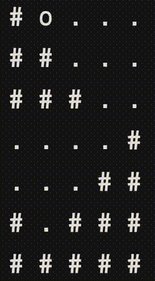

treasure <- plunderplot::plunder("resources/treasure.png", labels = TRUE)tl;dr
Three little R things I never finished. Or are useless. Or both?
Flotsam and jetsam
It’ll not surprise you that after all these years of blogging and farting around with R that I have a huge floating garbage patch of odds and sods that I sketched out at some point, but never finished or never found a use for.
Join me, fellow trash pandas, as we carouse through the accumulated bilge to dig up some certified D-rank content. Today I have three things to share:
- A method for finding treasure.
- Infinite abandoned dungeons.
- An underwhelming ‘physics’ ‘simulation’ for ‘secret’ purposes.
1. {plunderplot}
locator() is a funny base R function that lets you click a point on a plot to retrieve its coordinates.
I had a little locator() phase on this blog: I used it to make the {pixeltrix} package for point-and-click editing of ‘pixel art’ and wrote a post about extracting coordinates from fictitious maps.
The {plunderplot} package was an extension of the ‘data extraction’ idea, really. The plunder() function plots your image1 and asks you to click and label the axes for calibration. Then you’re invited you to click points on the plot and get in return a dataframe of the coordinates.
So you’re plundering coordindates from a plot, right? Hence the name. Consequently, the package README uses some piratespeak to explain how it works. I won’t subject you to that here.
To keep with the theme, the example image here is a simple treasure map with treasure markers2.
The console will talk to you during the process. You’ll be instructed to do things, one after the other. You calibrate the plot, select the points and optionally label them.
Click x axis min
Click x axis max
Click y axis min
Click y axis max
Type value at x axis min: 0
Type value at x axis max: 100
Type value at y axis min: 0
Type value at y axis max: 50
Click points on the chart, press ESC when finished
Type a label for point 1: west
Type a label for point 2: centre
Type a label for point 3: east
DoneAnd then you get your coordinates back:
treasurex y labels
1 35.97651 32.19178 west
2 55.94714 23.15068 centre
3 61.96769 26.16438 eastExcept, well, this package has done before3. More than once. I was aware of the {juicr} package, which contains an interactive GUI for extracting data out of plots in scientific PDFs and that sort of thing, but there’s already CRAN packages with {plunderplot}’s functionality: {digitize} and {metaDigitise}, which have been around for years.
So it’s not more useful than other tools… but I had fun coding it and I’ve used it myself for ‘real’ applications more than once.4
2. Perlin dungeon
I made a toy roguelike ‘game’ in the {r.oguelike} package5. An important feature of games in this genre is a procedurally-generated tile-based dungeon map for your character to do an adventure in.
I came up with a basic system to create convincing connected caverns, but there are many ways to create this kind of map. One method is to use Perlin noise, which the {ambient} package can help you generate.
This print_perlin_dungeon() function never made it into the package, but it’s a pretty straightforward way of creating ‘dungeons’ with good balance between randomness and structure.
print_perlin_dungeon <- function(
m, # matrix of perlin noise via ambient::noise_perlin()
invert = FALSE # flips tile positions (use set.seed before generating noise)
) {
tile_wall = "#"
tile_floor = "."
# Standardise noise values from 0 to 1
m_bin <- round((m - min(m)) / (max(m) - min(m)))
# Lay floor and wall tiles, flip if invert = TRUE
if (!invert) {
m_tiled <- ifelse(m_bin == 1, tile_wall, tile_floor)
} else {
m_tiled <- ifelse(m_bin == 0, tile_wall, tile_floor)
}
# Block off edges with wall tiles
m_tiled[, 1] <- tile_wall
m_tiled[, ncol(m_tiled)] <- tile_wall
m_tiled[1, ] <- tile_wall
m_tiled[nrow(m_tiled), ] <- tile_wall
# Print to console, line-by-line
for (i in seq(nrow(m_tiled))) {
cat(m_tiled[i, ], "\n")
}
}The noise_perlin() function in the {ambient} package has lots of twiddly knobs for arguments. I can’t profess any science behind my choices here:
m <- ambient::noise_perlin(
dim = c(30, 42),
frequency = 0.2,
interpolator = "linear",
fractal = "fbm",
octaves = 2,
lacunarity = 3,
gain = 0.5,
pertubation = "none",
pertubation_amplitude = 1
)You can pass the matrix output from noise_perlin() to the print_perlin_dungeon() to print the map to the console.
print_perlin_dungeon(m)# # # # # # # # # # # # # # # # # # # # # # # # # # # # # # # # # # # # # # # # # #
# # # # # # # # # # # . . . . . # # # # . . . . . # # # # # # # # # # # . . . # # #
# # # # # # # # # # # . # # . # # # # # . . . . . # # # # # # # # . # . . # # # # #
# # # # # # # # # # # # # # # # # # # # . . . . . # # # # # # # # . . . # # # . # #
# # # # # # # # # # # # # . # . # # # . . . . . . # # # # # # . . . # # # # # # # #
# . # # . . # . . . . . . . # . # # # . . . . . . . # # # # . . . . # . # # # # . #
# . . . . . . . . . . . . . . . . # # # # # . . . . . # # # . . . . . . . # # # . #
# # . . . . . . . . . . . . . . . . # # # . . . # . # . . # . . . . . . . # . . . #
# # . . . . . . . . . . . . . . . . # . # # . . # . . # # # . . . . . . . . . . . #
# . . . . . . . . . . . . . . # . . . . # # . . . . . # # # . . . . . . . . . . . #
# . . . . . # # # # . # # # . . . . . . . . . . # . # # # # . . . . . . . # # . . #
# . . . . . # # # # # # # # . . . . . . # . # # # # # # # # # . . . . . # # # # . #
# . . . . . # # # # # # . . # . . . . . # # # # # # # # # . . . . . . # # # # # # #
# . . . . . # # # # # # . . # . . . . . # # # # # # # # # . . . . . . # # # # # # #
# . . . . . # # # # # # # # # # # . . # # . . . . . # # # . . . . . . # # # # # . #
# . . . . . . . . # . . # # # . . . . . . . # # . . # # # . . . . . . . # # # # . #
# . . . . . . . . # . # # # # . . # . . . . # # # . . # # # # . . . . . . # # # # #
# . . . . . # . . # # # # # # # # # # # # . # # # # . # # . # # . . . # # # # . . #
# . . . . . . . . # # # # # # # # # # # # # # # # # . . . . # # . . # # # # # . . #
# . . . . . . . . . # # # # # # # # # # . # # # # # . . . . # # . . . . # # # # . #
# . # # # . . . . . . # . . . . # # # # . . # # # . . . . . . . # # . . # # # # . #
# # # # # . . . . . . . . . . . . . . . . . . . # . . . . . . . # # . . # # # # # #
# # . . # # . . . . . . . . . . . . . . . . . . # # . . . . # # # # # # # # # # # #
# . . # . # . . . . . . . . . . . . . . . . . . . # . . . . # # # # # # # # # # # #
# . . . . . . . . . . # . . . . . . . . . . . . . # # # # . # # # # # # # # # # # #
# . . . . . . . . . . # # # # . . # # # . . . . . . . # # . . # # # . . # # # # . #
# . . . # # # . # # # # # # # . # # # # # # . . # . . . . . . # # . . . # . # # . #
# . . # # # # # # # # # # # # # # # # # # # . . . . . # . . . . . . . . . # # # # #
# . # # # # # # # # # # # # # # # # # # # # # . . . . . . . . . . . . . . # # # # #
# # # # # # # # # # # # # # # # # # # # # # # # # # # # # # # # # # # # # # # # # # Of course, this will generate a new map every time you run it. I would say it’s major flaw is that it’s missing an open path between all the caverns, but otherwise it looks pretty cavelike to me. If I squint.
A version of this code is in a GitHub Gist. It might even have been in a tweet once.
3. Droplet ‘physics’
I experimented with this in support of a different (secret!) project that may never finish.
It’s a cross between the physics of water flowing under gravity and a pathfinding system. Except that description is way too grandiose. Basically, a droplet tile (o) ‘flows’ from top to bottom of a matrix defining a ‘map’ that you create, passing through empty tiles (.) and given ‘collisions’ with block tiles (#).
Here’s a basic map to start, defined as a matrix:
block <- "#"
empty <- "."
drop <- "o"
m <- matrix(
c(1, 0, 0, 0, 0,
1, 1, 0, 0, 0,
1, 1, 1, 0, 0,
0, 0, 0, 0, 1,
0, 0, 0, 1, 1,
1, 0, 1, 1, 1,
1, 1, 1, 1, 1),
nrow = 7,
byrow = TRUE
)
m[which(m == 1)] <- block
m[which(m == 0)] <- empty
m[8] <- drop
print(m) [,1] [,2] [,3] [,4] [,5]
[1,] "#" "o" "." "." "."
[2,] "#" "#" "." "." "."
[3,] "#" "#" "#" "." "."
[4,] "." "." "." "." "#"
[5,] "." "." "." "#" "#"
[6,] "#" "." "#" "#" "#"
[7,] "#" "#" "#" "#" "#" You can make this map more or less complicated. You can even use {pixeltrix} to make a map by interactively clicking squares in a plot window to receive back a matrix.
The code to run ‘the simulation’ is just a repeat loop that wipes and draws to the console following some basic ifs. It will break when the droplet comes to a stop.
repeat {
cat("\014")
for (row in seq(nrow(m))) {
cat(m[row, ], "\n", sep = " ")
}
Sys.sleep(1)
droplet_i <- which(m == drop)
droplet_i_save <- droplet_i
below_i <- droplet_i + 1
if (m[below_i] == empty) {
m[droplet_i] <- empty
m[below_i] <- drop
}
if (m[below_i] == block) {
left_i <- droplet_i - nrow(m)
right_i <- droplet_i + nrow(m)
is_left_open <- FALSE
is_right_open <- FALSE
if (m[left_i] == empty) is_left_open <- TRUE
if (m[right_i] == empty) is_right_open <- TRUE
if (is_left_open & is_right_open) {
sampled_direction_i <- sample(c(left_i, right_i), 1)
m[droplet_i] <- empty
m[sampled_direction_i] <- drop
}
if (is_left_open & !is_right_open) {
m[droplet_i] <- empty
m[left_i] <- drop
}
if (!is_left_open & is_right_open) {
m[droplet_i] <- empty
m[right_i] <- drop
}
}
droplet_i <- which(m == drop)
if (droplet_i == droplet_i_save) break
}Here’s a little gif showing how this basic example looks in the console:

Alas, I am an untrustworthy narrator! The droplet will scooch left and right forever on a flat surface. The animation only stops if the droplet is trapped at the lowest point, like in the gif above. No one really understands physics though, right, so it’s basically fine.
I think I wanted to have the droplet travel diagonally instead of across and down; try introducing tiles with different properties (e.g. angled, like \ and /); and have the ability to add more than one droplet at a time. I’ll probably explain eventually about why I made this subpar toy6.
You can find a version of this code in a GitHub gist if you really must.
Now wash your hands
Nothing here is going to change your life; I just wanted to set these ideas free for purposes of spiritual atonement.
For fun toys and proper R noodlings you can always check out anything by Mike (coolbutuseless), or stuff like Tomaz‘s ’Little Useless-Useful’ series. Far more fruitful.
Beware: this may be the first post in a series. I’m not afraid to put my hand back in the waste disposal unit. Are you?
Environment
Session info
Last rendered: 2023-09-09 00:21:19 BSTR version 4.3.1 (2023-06-16)
Platform: aarch64-apple-darwin20 (64-bit)
Running under: macOS Ventura 13.2.1
Matrix products: default
BLAS: /Library/Frameworks/R.framework/Versions/4.3-arm64/Resources/lib/libRblas.0.dylib
LAPACK: /Library/Frameworks/R.framework/Versions/4.3-arm64/Resources/lib/libRlapack.dylib; LAPACK version 3.11.0
locale:
[1] en_US.UTF-8/en_US.UTF-8/en_US.UTF-8/C/en_US.UTF-8/en_US.UTF-8
time zone: Europe/London
tzcode source: internal
attached base packages:
[1] stats graphics grDevices utils datasets methods base
loaded via a namespace (and not attached):
[1] htmlwidgets_1.6.2 compiler_4.3.1 fastmap_1.1.1 ambient_1.0.2
[5] cli_3.6.1 tools_4.3.1 htmltools_0.5.5 rstudioapi_0.15.0
[9] yaml_2.3.7 rmarkdown_2.23 knitr_1.43.1 jsonlite_1.8.7
[13] xfun_0.39 digest_0.6.33 rlang_1.1.1 evaluate_0.21 Footnotes
Such as a fictitious map of Sodor or a chart over time over Thomas the Tank mods in popular videogames. Whatever you like.↩︎
This just looks like a screenshot of treasure locations from The Legend of Zelda: The Windwaker, which I assume I was replaying at the time.↩︎
I’ve reinvented the wheel more than once, like for {coloratio}/{savonliquide} and {badgr}/{badger}.↩︎
*Breathes in deep breath of copium.*↩︎
Or not. You can’t tell me what to do.↩︎
Reuse
CC BY-NC-SA 4.0